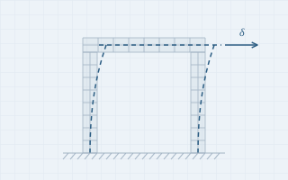

Nonlinear 3D FEM of a concrete portal frame
Displacement-controlled analysis with 8-node hexahedral elements on a Gmsh mesh, pushed to 4% drift with a nonlinear concrete law. Produces load–displacement curves, stresses and deformed shapes.
View code